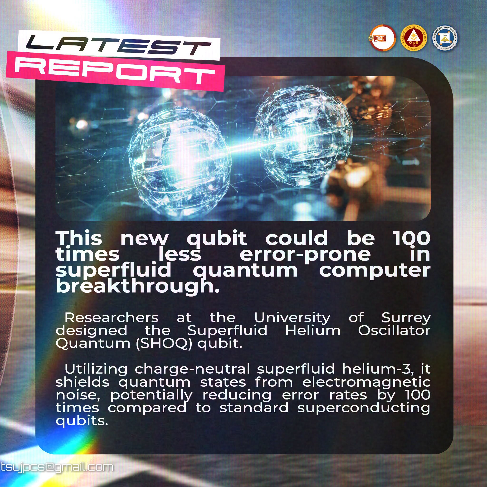

01
President
John Doe
Leads chapter planning and represents the organization.
ROLEYOUR COMPUTING COMMUNITY AT TSU
A space for computing minds to connect, learn, and build together. Meet the Junior Philippine Computer Society – TSU Chapter.
01 / ABOUT US
Different ideas. Shared curiosity.
A community where we grow together.
This website introduces the Junior Philippine Computer Society – TSU Chapter and provides a home for its members, activities, and computing community.
Placeholder — the chapter’s approved mission statement will appear here.
Placeholder — the chapter’s approved vision statement will appear here.
02 / OFFICERS
The people behind the community.
Official roster awaiting
confirmation.
Leads chapter planning and represents the organization.
ROLESupports the team and coordinates chapter initiatives.
ROLEMaintains chapter records and communications.
ROLESupports financial records and resource planning.
ROLE03 / ACTIVITIES
Competitions, learning, and chapter initiatives.
Explore the latest from JPCS–TSU.
An interface design challenge for currently enrolled College of Computer Studies students. Bring your own concept and creativity to an F1-themed website.
Explore the chapter’s Trackside Report on the SHOQ qubit, a superfluid helium approach that could reduce quantum computing errors.
The chapter’s final pre-order call for the official shirt and complete merch set. Find the ordering details in the original post.
04 / NEWS
Ideas worth sharing.
Updates worth following.

The chapter highlights the University of Surrey’s SHOQ qubit, which uses charge-neutral superfluid helium-3 to shield quantum states from electromagnetic noise and could reduce error rates.
A website competition for College of Computer Studies students, with registration until October 11. Find the registration form and official mechanics in the post.
The chapter’s final call for official JPCS shirt and merch set pre-orders. View the announcement and its order form.
05 / FACEBOOK POSTS
Announcements, stories, and updates.
From the JPCS–TSU community.
06 / CONTACT
Connect with the JPCS–TSU community. We look forward to hearing from you.
Official chapter email awaiting verification.
The official membership process will appear here when confirmed by the chapter.